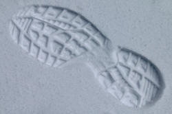

Prepositions of place

There is an essential guide to prepositions in the initial plus training section and a guide to prepositional phrases in the in-service section.
 |
How many prepositions of place are there? |
Lots. In the graphic at the top, there are nearly 60 and that's
not a full list. Some, of course, such as athwart, abeam,
chez and astride are rarely used but many are very
common. It's our job to make some sense of all this for our
learners and to do that we have to do some serious language
analysis.
Here's an unclassified reference list of the usual prepositions of place:
| abaft abeam aboard about above across against ahead of along alongside amid amidst among amongst apart from around |
aside astern of astride at athwart atop away from before behind below beneath beside between beyond by chez |
close to down far from from in inside into near near to next to off on onto opposite opposite to out (of) |
outside (of) over past round through(out) to towards under underneath until up up to upon via with within |
It is not too surprising that our learners have a bit of trouble with these.
|  |
What do prepositions of place do? |
Three things:
- They act as adjuncts which relate an event
or state to a place. For example
We were talking in the garden. - They act as postmodifiers telling us where
something is. For example
the man on the corner. - They form the predicate after the verb be.
For example
The wheelbarrow is in the garden.
 |
How do we recognise a preposition of place? |
That's not as simple as it might seem. We have to look at
the three things that the prepositions actually do and then decide.
Words which are often seen as prepositions actually occur
masquerading as
different parts of speech quite regularly. You don't always
know that a word is a preposition until you put it in context.
Here's what's meant.
Which of the following contains a
preposition? Click on the table when you have an answer.

 |
How do we analyse prepositions of place? |
It's not at all easy because many do not lend themselves to neat categories and many overlap in meaning with others but we can make some sense of them by considering two factors:
- What dimension do they refer to?
- a point
- a line or a surface
- an area or volume
- Do they refer to position, to movement to a destination or to both?
Once we have those two factors in mind, life gets (a bit) simpler. Try analysing the following prepositions in use and ask yourself:
- What sort of dimension do they refer to?
- Do they refer to position, to movement to a destination or can they refer to both?
Then click on the
 to reveal some comments.
to reveal some comments.
| He walked
to the
corner
|
|
| He stood
at the corner
|
|
| He put it onto the table
|
|
| He put it
on the floor and it's still
on it
|
|
| He took it
away from me and told me to
keep it away from the
children
|
|
| The
helicopter took them off the
ship ... |
|
| ... and
they are now out of danger
|
|
| I put it
into my pocket
|
|
| I put it
in my pocket and it's still
in there
|
|
A few more comments
It is fairly easy to see from the above and with a bit of reflection on the list at the beginning, that most prepositions of place can be used to describe location and movement to a destination but some can only do one or the other.
For example, in, above, under and on can refer to
both locations and movements to destinations:
Put it in the box | It is in the box
I hung it on the wall above the fireplace | It's always been on the
wall above the fireplace
etc.
However, into, onto, past and away from can only
refer to movement to a destination:
Put it into the box | *It is into the box
I nailed it onto the wall | *It's onto the wall
I ran past the shop | *I stood past the shop
etc.
(The preposition past can sometimes be used to refer to a
position but the implication is that movement is involved. For
example:
The pub is just past the bridge
refers to position but with the implication that one is moving
towards the pub.)
A smaller set can only (usually) refer to static location.
This very short list includes: at, beside and by:
I was at the station | *I went at the station
I sat by/beside my aunt | *I went by/beside my aunt
Even with some of these, it is possible to use verbs
of movement providing the relative positions of the
two participants are unchanged, e.g., I ran beside him all the
way.
The other thing to note is that by (in common with some
other prepositions) has alternative meanings. In the sense of
past, rather than next to, it can be used for
movement: I ran by [past] the shop.
Movement towards a destination is sometimes described as positive and away from a destination as negative but that is something we can ignore for teaching purposes.
 |
Putting the analysis into practice in the classroom |
Explaining and exemplifying
Using this kind of analysis, it becomes a little easier to explain to a learner what a preposition 'means'.
Example 1: if you were asked to explain along the road,
what would you say? Click
 when you have decided.
when you have decided.
The
preposition refers only to movement on a surface or
line. Therefore, you cannot have:
*He is along the river
because that's position
*We stood along the path because
stand also implies position
*We went along the corner
because that is reference to a point
*He strolled along the garden because that is reference to an
area
*Put it along the box because
that is reference to a volume.
You can have any number of verbs of movement such as go, walk,
run, saunter, climb, hurtle etc. working with any number of
lines or surfaces such as wall, street, lane, line, corridor
etc. to make correct sentences such as:
He walked along the line
I sauntered along the path
They ran along the corridor
and so on.
That should satisfy the most demanding of learners.
Example 2: if you were asked how
at, on and in differ, how would you reply?
Click
when you have decided.
All
three prepositions can be used for movement or position so we need
to look at Dimensions only:
at usually refers to a point: at the
bus stop, at the corner, at the shop etc.
on usually refers to a line or surface:
on the wall, on the margin, on the river, on my hand, on his
leg, on the ceiling, on the border etc.
in usually refers to an area or a volume: in the box,
in the kitchen, in the school, in the station, in the garden, in the
playground, in the field etc.
Using graphics
Many people respond well to graphical representations of the relationships set by prepositions and they are easy to invent off the cuff. The two issues (position vs. movement and dimensions) are the things to consider. Here are some cut-out-and-keep diagrams:
 |
 |
 |
 |
 |
 |
Other distinctions |
Apart from movement vs. location and the three dimensions, there are some other distinctions to be made when explaining prepositions of place to your learners:
- Relative vs. absolute position and speaker orientation
- Horizontal vs. vertical position and movement
- Passage vs. destination
- Touching or not (contiguity)
One at a time, then.
Relative vs. absolute position and speaker orientation
Some prepositions refer to the relative positions only of two
items or people. I.e., they express where something is
in relation to where something else is. For example:
Tom is in the town
is true wherever the observer is
standing and wherever the town is so it is not concerned with
relative position, only with the absolute position of Tom. However:
The car is behind the van
is only sensible if one knows
where the observer is standing. Move the observer or the
second object (i.e., the object the car is relative to) and
you change the relationship. If the observer moves the
sentence may become
The car is in front of / on the left of / on
the right of the van
etc. Move the van and the sentence
changes again.
Prepositions like this come in pairs of converse words. If we
say, e.g.
My keys are underneath the newspaper
we are
also implying that
The newspaper is on top of my keys
It is not sensible to infer from
Tom is in the town
that
The town is around Tom
so that relationship is not
relative.
Move the town and we still know where Tom is; move the newspaper and
it all changes.
Can you classify the following? Click
 when you have done that.
when you have done that.
above, over, under, beneath, in front of, in, inside,
at, beyond
| Relative | Absolute |
| above over under beneath in front of beyond |
in inside at |
Prepositions describing movement to a destination are always relative because one of the objects at least is moving relative to the other.
Horizontal vs. vertical position
This is related because we are referring to relative positions,
of course.
Can you classify these based on whether they refer to horizontal or
vertical relationships?
Click
 when you have done that.
when you have done that.
on top of, underneath, below, in front of, on the
right of, behind, beyond
| Horizontal | Vertical |
| behind beyond on the right of in front of |
on top of underneath below |
Horizontal vs. vertical movement
When it comes to prepositions referring to movement, the same
distinction applies.
Classify these and then click
 :
:
up, down, along, across
| Horizontal | Vertical |
| along across |
up down |
That was pretty easy but note that up and down are often used to describe horizontal movement: He went down the road, He went up the street.
Passage vs. destination
Three common prepositions refer to passage: through, across,
past.
However, the dimensions they refer to are
different.
Compare, e.g.:
They walked across the garden.
They walked through the forest.
They walked past the house.
What do you notice? Click
 for a comment.
for a comment.
- across usually refers to a surface
of some kind as in
across the road
across the Atlantic
across the tarmac - through usually refers to volume
rather than surface and implies being inside something as in
through the tunnel
through the canyon
through the narrow alley - past implies reference to a point
so the house (and even a much larger item) in this example is
perceived as a simple point in space as is the noun in
we drove past the city
we flew past Iceland
we walked past the shop - The prepositions across and past can also
refer to a static place rather than movement as in, for example:
He lives across the road
The pub lies past the next junction
However, even here the meaning implies some potential movement insofar as one needs to go across the road to visit him or past the next junction to reach the pub.
Touching or not (contiguity)
Compare
It is below the table
to
It is underneath
the newspaper
to see what's meant by this.
Some prepositions such as on top of and underneath
clearly imply that the two objects are in contact. Others do
not, although the objects may
be touching, e.g.:
I hid under the blanket
vs.
I hid underneath
the blanket.
A note on over, above, below, and under:
over and under imply a direct vertical
relationship: the plane flew over the town, the river flowed
under the bridge etc.
above and below can describe such a relationship
but they can also imply simply a difference in elevation: the
town is above the valley, the river is below the market place.
If you swap the prepositions around in those examples, you'll soon
see what is meant.
the use of all
If some prepositions are modified with all, the sense may change slightly and be more pervasive:
- He ran over the garden vs. He ran all over the garden
- He ran through the park vs. He ran all through the park
- I walked along the street vs. I walked all along the street
- I walked around Sussex vs. I walked all around Sussex
and finally:
If we use a verb of movement whose meaning involves the sense of a preposition, we can omit the preposition without affecting the sense. Compare, e.g.:
- He passed the park vs. He passed by the park
- Turned the corner vs. He turned round the corner
- She jumped the wall vs. She jumped over the wall
|
|
More classroom implications |
Alerting our learners to whether a preposition refers to point,
line or surface, area or volume and movement or location (or both)
is part of the battle.
Step 2 is to consider the other variables:
- The orientation of the observer can usually be handled with
simple diagrams such as

- Relative position and horizontal vs. vertical position can
be handled the same way:

Which of the following are true?
and so on and on and on.Statement True? False? The blue box is over the green box The black box is above the yellow box The black box is over the yellow box The yellow box is below the blue box The brown box is under the red box The red box is behind the yellow box The pink box is under the black box - Issues of movement can also be illustrated.
What can you say about the picture using went over, walked under, drove across, went along, walked through
The train went over the bridge
We walked under the bridge
The boat went along the bridge
etc. - across, through and past cause
conceptual difficulties (not least because they rarely translate
exactly, if at all) so need some kind of visual hook:


The taxi drove along the street and past the hotel without stopping. - Dimensions
As we see above, dimensions and viewpoints can easily be illustrated with five simple shapes (and an arrow if you want to show movement). Here they are:
Point of view can be added with three curves and a dot:


point line surface 


area volume movement arrows

With those simple shapes, in various combinations, you can illustrate virtually all the prepositions of place and alert your learners to their characteristics.
Try it for yourself with some prepositions of place we have not considered in detail here like:
against, ahead of, alongside, amid, among, between, close to, far from, next to, opposite to, towards, via etc.
And so on. Your imagination, and that of your learners, determine the limits.
Summary of prepositions of place

| Related guides | |
| place adjuncts | for an overview of how else we signal where something occurred in English |
| prepositions of time | for a similar guide to another set of prepositions |
| prepositional phrases | for a guide to prepositions and their complements |
| 7 meanings of over | for a short video presentation of the meanings of a troublesome preposition |
| elementary prepositions | for a lesson for elementary learners with a short video to help them understand place and movement |
| place adjuncts | a guide which also considers adverb adjuncts and investigates some word order and syntactical issues |
Main reference:
Quirk, R, Greenbaum, S, Leech, G & Svartvik, J, 1972, A Grammar of
Contemporary English,
Harlow: Longman